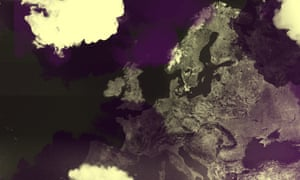

Headlines
santa marta

Now
35°C17:00
35°C
20:00
35°C
23:00
35°C
02:00
35°C
View full forecast
•Live
Zelenskiy calls for Russia to lose UN veto power; UN chief says 'humanity has opened gates of hell' on climate
_________________
Full story
Ukrainian president rails for Russia's veto power to be removed and UN reform
_________________
Climate crisis
Leaders of biggest United Nations Inquiry into rights polluting nations skipping summit
_________________
United Nations
Inquiry into rights in Iran urged to look at detention of dual nationals

Revealed
Almost everyone in Europe is breathing toxic air'The air tastes like burnt plastic'
Skopje's pollution problemEurope's pollution divide
how the area comparesIndia
Foreign ministry urges its citizens to exercise 'extreme caution' in Canada
Analysis
How should